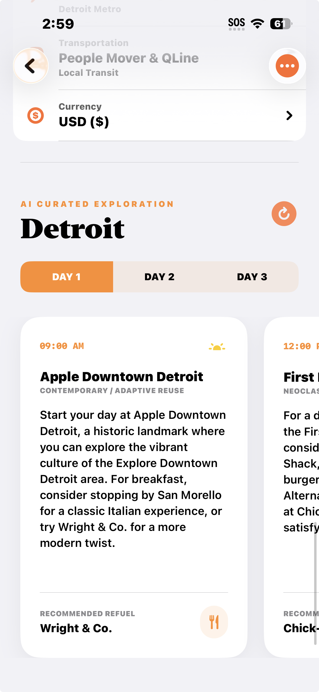
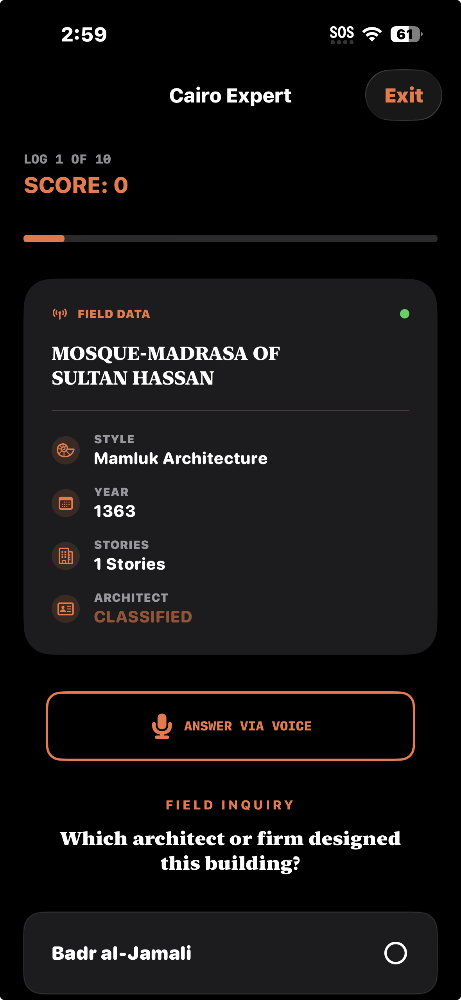
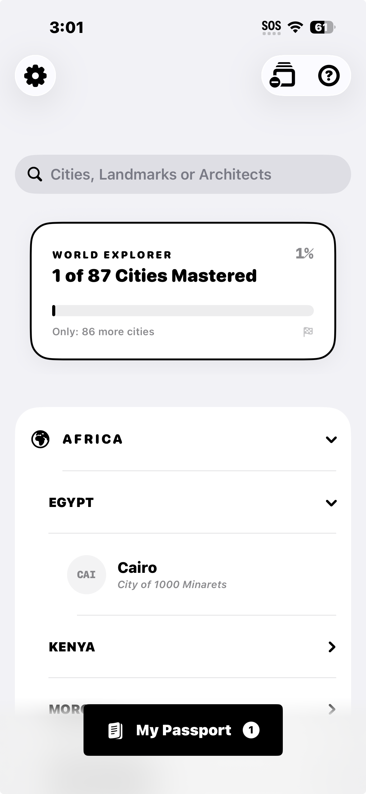
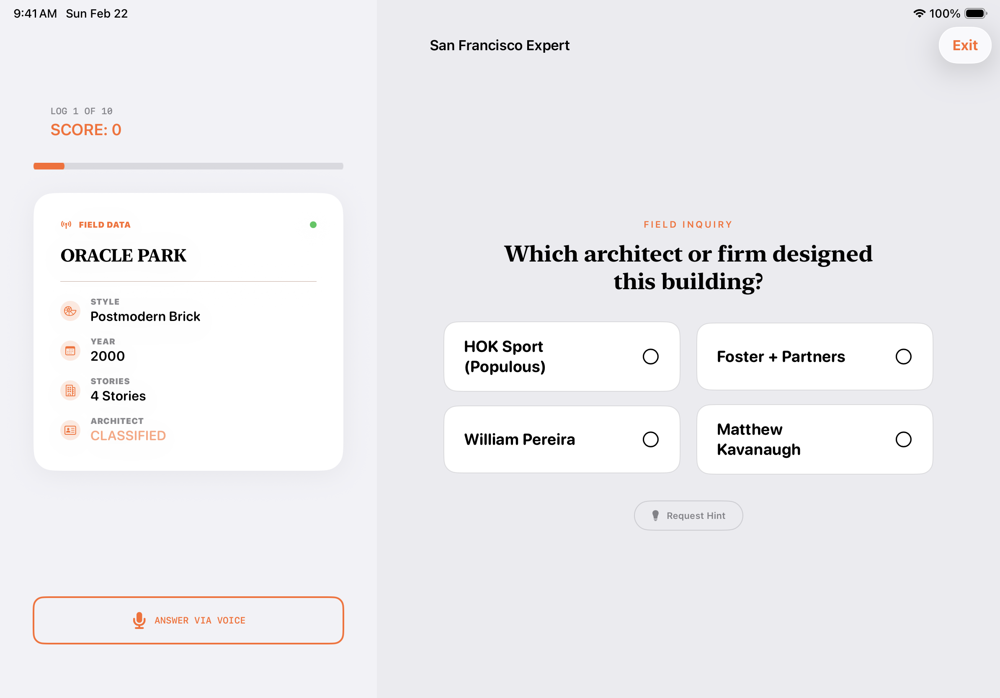
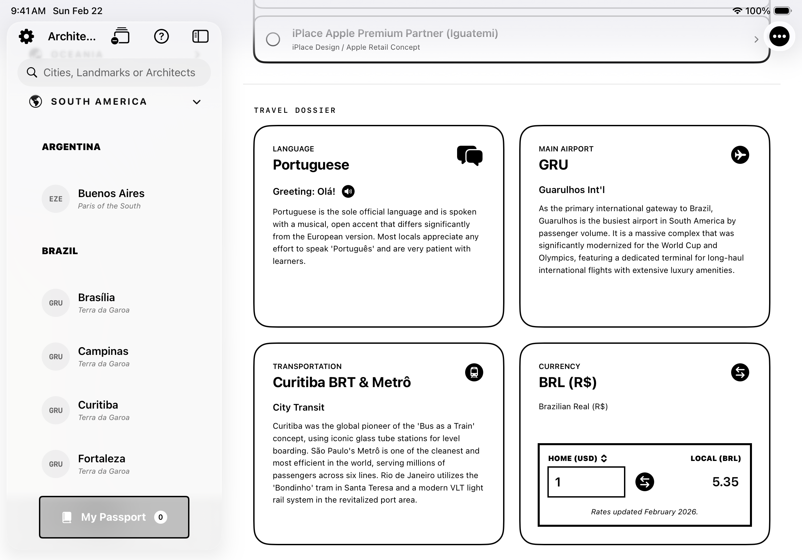
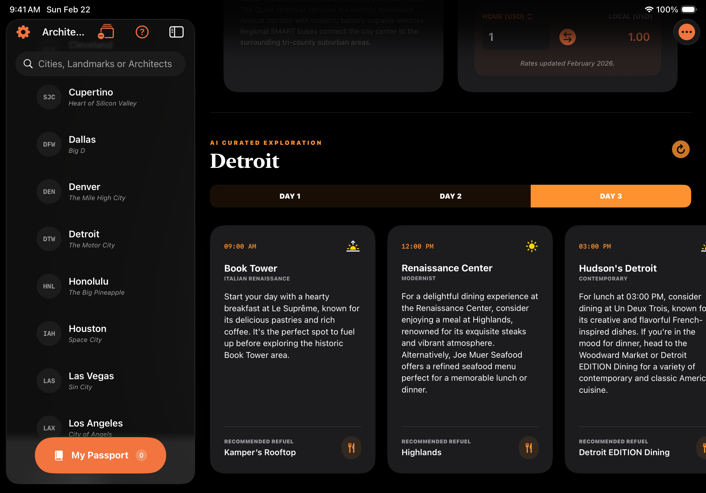

Stamped! — A City Passport
A SwiftUI travel discovery app that gamifies architecture exploration with passport stamps, city mastery, and AI-curated itineraries.
Demo Video
Demo video: Stamped iPad walkthrough.
Overview
Stamped! is an iOS app designed to solve what I call "architectural blindness"—the tendency to pass through cities without understanding their built history. The app turns landmark discovery into a progression system: users explore cities, mark buildings as visited, earn passport stamps, and unlock mastery tiers.
Project Snapshot
- Platform: iOS (SwiftUI)
- Type: Educational travel companion
- Focus: Gamified learning, accessibility, offline-first content
- Team: Solo
- Duration: 4 months
- Role: Product designer and iOS engineer
- Timeline: November 2025 - February 2026
My Contributions
- Designed and implemented the end-to-end product flow from onboarding through mastery progression
- Built modular SwiftUI feature surfaces across city exploration, passport tracking, quiz interactions, and settings
- Implemented shared state/persistence managers for progress, media capture, and user preferences
- Integrated Apple Intelligence itinerary generation with robust fallback behavior for unsupported environments
- Shipped accessibility-focused UX including high contrast, reduced motion, audio/haptic controls, and dark mode support
Problem
Most travel tools prioritize logistics over context. I wanted to create an experience where users could learn a city's architecture, track progress, and stay motivated through game-like feedback instead of checklist fatigue.
Challenge
Build a feature-rich experience (city discovery, quizzes, stamps, custom photos, settings, and itineraries) without overwhelming users, and ensure the app works well across iPhone and iPad form factors.
Approach
- Designed a modular SwiftUI architecture with feature-based folders (City List, Detail, Passport, Quiz, Itinerary, Settings)
- Used shared observable managers for progress, haptics, sound, speech, and navigation state
- Implemented a progression loop: visit landmarks → complete city → trigger celebration → persist stamp history
- Built with local data registries and persistence so core flows remain usable without network dependency
Core Features
- Global city explorer with hierarchical grouping (continent → country → city) and mixed search (cities, landmarks, architects)
- Passport gallery with mastery tiers, completion tracking, and celebratory stamp animations
- City detail module with landmark check-ins, custom photo capture/upload, and local travel information
- Interactive quiz mode with multiple question types, hints, high-score persistence, streak logic, voice input, haptics, and audio feedback
- AI-curated itinerary cards with Apple Intelligence integration and graceful fallback content when unavailable
- Offline currency conversion support using embedded rate mappings for travel context
Accessibility Decisions
- System + manual support for high contrast and reduced motion, applied across major flows
- Full dark mode compatibility across app surfaces, interactive controls, and readability states
- Voice and screen-reader feedback in quiz interactions (including spoken correctness announcements)
- Configurable sensory settings (sound, haptics, motion) in-app rather than hard-coded defaults
- Adaptive UI behavior between iPhone and iPad, including orientation and split-view patterns
Technical Highlights
- State persistence with AppStorage/UserDefaults and disk-backed image storage for user-captured landmark photos
- Single source of truth for visited landmarks through a shared global progress manager
- Conditional AI path: FoundationModels session on supported OS versions with deterministic fallback generation
- Custom app icon system built in Icon Composer with Light, Dark, Clear, and Tinted variants
- Feature toggles and reset controls for testability and content maintenance
Code Highlights
Selected snippets from my Stamped Swift source showing AI fallback handling, persistence, and user-configurable accessibility settings.
Itinerary / AI + Fallback
func generateAIContent(previousZip: String? = nil) async {
self.isGenerating = true
#if canImport(FoundationModels)
if #available(iOS 18.0, *) {
if let aiResponse = await tryRunAppleIntelligence(time: self.timeSlot, hint: distanceHint) {
self.curatedActivity = aiResponse.activity
self.icon = aiResponse.icon
self.foodSuggestion = aiResponse.food
self.isGenerating = false
return
}
}
#endif
try? await Task.sleep(nanoseconds: 600_000_000)
self.curatedActivity = "\(distanceHint) Admire the \(building.buildingStyle) details at \(building.address)."
self.icon = "mappin.and.ellipse"
self.foodSuggestion = building.foodSpots.randomElement() ?? "Local Favorite"
self.isGenerating = false
}Managers / Global Progress Persistence
@Published var visitedIDs: Set<String> = [] {
didSet { save() }
}
private let saveKey = "GlobalVisitedBuildingsKey"
private init() {
if let savedData = UserDefaults.standard.array(forKey: saveKey) as? [String] {
self.visitedIDs = Set(savedData)
}
loadImagesFromDisk()
}
private func save() {
UserDefaults.standard.set(Array(visitedIDs), forKey: saveKey)
}Settings / Accessibility + Preferences
@AppStorage("reduce_motion") var reduceMotion = false
@AppStorage("high_contrast_mode") var highContrast = false
@AppStorage("haptics_enabled") var hapticsEnabled = true
@AppStorage("is_sound_enabled") var isSoundEnabled = true
func resetAllContent() {
if let domain = Bundle.main.bundleIdentifier {
UserDefaults.standard.removePersistentDomain(forName: domain)
}
GlobalProgressManager.shared.resetAllProgress()
reduceMotion = false
highContrast = false
hapticsEnabled = true
isSoundEnabled = true
}Key Screens
Key screens: iPhone and iPad UI states from Stamped.
iPhone Screens

Light mode city list flow in the Stamped travel discovery experience.

Dark mode interface preserving hierarchy and readability across key interactions.

High contrast city list view supporting accessibility-first visual clarity.
iPad Screens

Quiz flow in light mode optimized for iPad screen space and readability.

Travel dossier in high contrast mode for improved visual accessibility on iPad.

AI-curated itinerary experience in dark mode for low-light planning workflows.
Outcome
The final product is a cohesive, production-style SwiftUI app that balances learning, exploration, and progression. It demonstrates end-to-end product execution—from concept framing through interaction design and implementation—while maintaining accessibility as a first-class requirement.
Next Iteration
Next steps include integrating a full in-app translator for international travel, shipping a fully network-connected currency converter with real-time rate updates, and expanding the content library with more cities and landmark datasets.